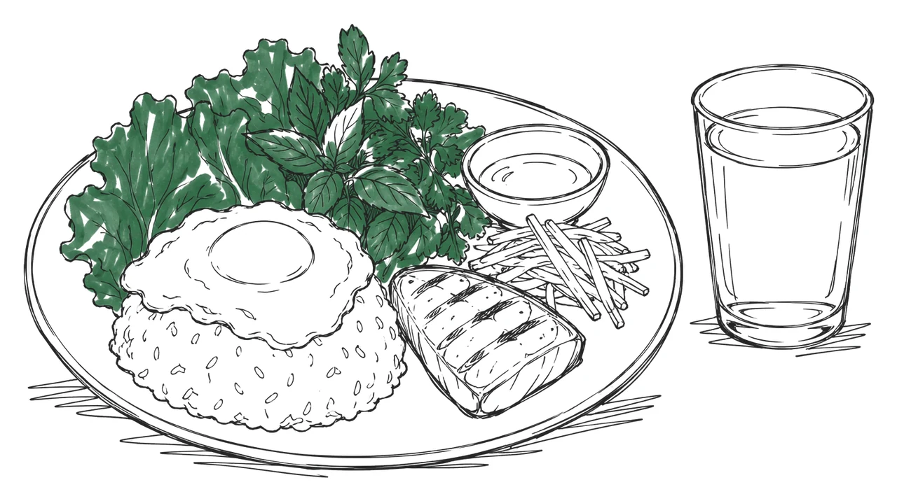

Nutrition, Invested
A survival guide to food.
One plate. Five anchors. Ninety days.
The Book$9.99
Reads on Kindle, Apple Books & Google Play Books
An evening's read, with a kit for the kitchen and more than 200 sources at the back.

What's Inside
At thirty I lived on cup noodles and two-for-one energy drinks, cheap at the register and expensive by two o'clock.
I learned better at the carts of Bangkok, Phnom Penh and Mexico City, where the cooks measured by hand: rice packed into the same small bowl and turned out in a dome, one chop off the grill, the next plate waiting.
Back home on a delivery route, I pulled out of the drive-thru line two cars from the speaker and built the plate the carts had taught me. Three weeks later lunch held me through the last stop, with gas to spare. The rest took longer: reading the back of a box, shopping in aisle order, cooking ahead.
No apps, no trackers, no meal plans. A notebook entry a week, and at ninety days you decide what stays.
กินข้าวยัง ញ៉ាំបាយហើយឬនៅ Ăn cơm chưa? ¿Ya comiste? Eaten yet?
The Breakdown
Andrew Rios is a traveler who kept notes. He didn't study nutrition. He took it apart.
Before food was ever the subject, he spent two years pushing a wheelchair to a window every morning and counting another man's pills into a paper cup, eleven of them. The man in the chair told him what he should have eaten.
Raised in L.A.'s San Fernando Valley on family pozole and a boulevard of drive-thrus. A valet stand in Death Valley: a paycheck with nowhere to go, nights on a screen watching strangers eight thousand miles away live out of one bag. His own life already fit in one. He kept watching. A teaching certificate, then the one-way ticket. Two years across Southeast Asia, where eating well wasn't a project. Just dinner.
Home, onto delivery routes. Every paycheck bought one new food, and every break went to reading up on it.
Nutrition, Invested is the notes: eight thousand miles of them, written between bites, then pieced together.
His bag is still by the door.
Questions
The fine print
What do I get?
On Payhip you get both files, PDF and EPUB, the moment you check out. The EPUB goes into the Kindle app, Apple Books or Google Play Books. The PDF opens on anything with a screen. On Amazon it lands in your Kindle library, ready on a Kindle or in the app.
Is this medical advice?
No. It's notes from the road, not a clinic's protocol. Diabetes, kidney disease, a heart condition, a pregnancy, a diet your doctor wrote down: any of those, and the book goes to the doctor before anything changes on your plate or in your cabinet.
Why ninety days?
Because ninety days after my first blood draw, I was back in the same lab chair and the numbers had moved. Vitamin D and A1c take about that long to settle, and by then the notebook holds thirteen weekly entries, enough to draw a line. Day ninety closes the quarter.
Do I need a blood test?
No. The plate and the notebook run without one. If your doctor agrees a panel is due, the book covers what to ask for and how to read the results.
What's the Humane Accord Initiative?
It's my pledge. Health doesn't stop at the plate; our phones want a portion too: the feed that asks for one more swipe, the ping that pulls us back, the scroll with no bottom. Every year, I put 1% of each sale into organizations teaching people to read the recipe and invest their time.